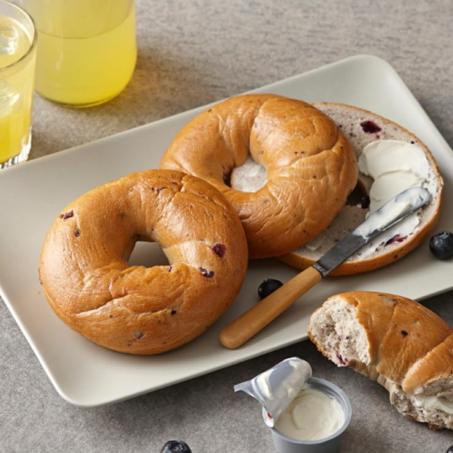

| 홈>메뉴>디저트> 블루베리 베이글 | ||||
|  | ||||
블루베리 베이글Blueberry Bagel |
||||
| 블루베리의 상큼한 풍미가 매력적인 베이글로 크림치즈와 함께 더욱 맛있게 즐기실 수 있습니다. | ||||
| 제품 영양 정보 | Tall(톨) / 355ml (12floz) | |||
|
1회 제공량 (kcal) 포화지방 (g) 나트륨 (g) |
258 0.3 539 |
당류 (g) 단백질 (g) , |
10 10 |
|
| 알레르기 유발요인 : 밀 | ||||
|
상큼한 블루베리를 넣은 새콤 달콤한 정통 베이글입니다. 아침을 깨우는 상큼한 향과 맛이 매력적인 블루베리 베이글은 크림치즈와 함께 즐기면 좋습니다. |
||||